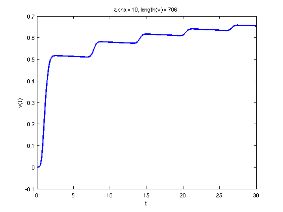
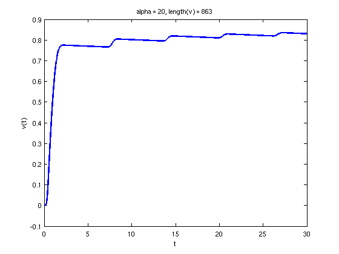
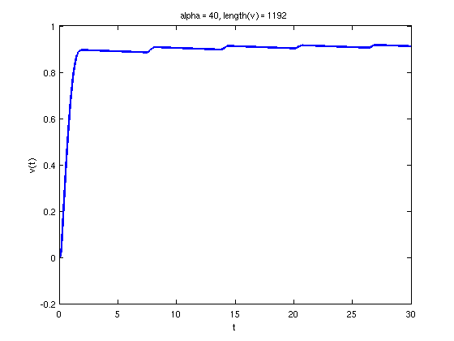
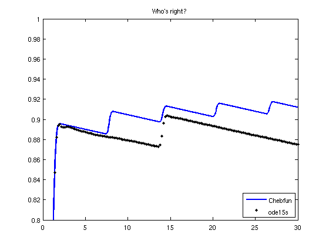
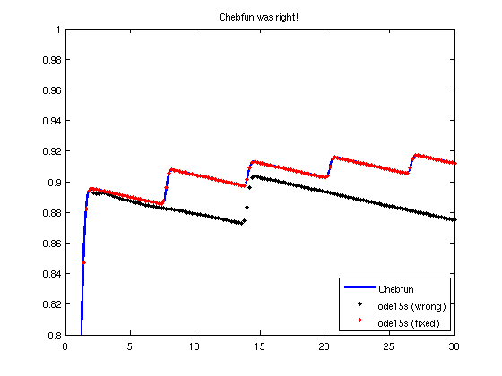
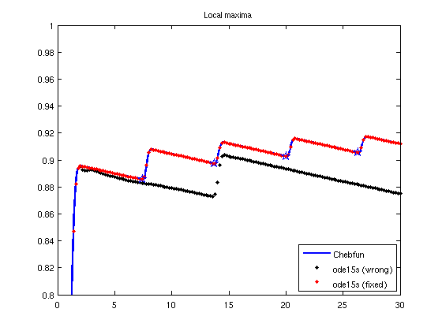

Half-wave rectifier
Toby Driscoll, May 18, 2011
Contents
(Chebfun example ode/Rectifier.m)
The initial-value problem
v' + ep*v = ep*(exp(alpha(sin(t)-v)) - 1), v(0)=0
models a half-wave rectifier that converts AC current into DC. With small values of ep and large values of alpha, it is very stiff.
We start off with a mild form of the problem.
ep = 1e-3; alpha = 10;
N = chebop(0,30);
N.op = @(t,v) diff(v) + ep*v - ep*( exp(alpha*(sin(t)-v)) - 1 );
N.lbc = 0; % initial condition
v_10 = N\0;
As you can see above, the solution v(t) requires a rather large degree polynomial to represent it. The system is characterized by rapid jumps between slowly varying plateaus, and the jumps require high resolution.
LW = 'linewidth'; lw = 2; plot(v_10,LW,lw) xlabel('t'), ylabel('v(t)'), title(['alpha = ',num2str(alpha),', length(v) = ',int2str(length(v_10))])
If we steepen the jumps by making the problem more stiff, we are well advised to "continue from" the previous solution, by using it as the initial guess to nonlinear iterations. This is done by setting the .init field of N. The representation length will close in on 1025, which is the default maximum size, so we increase it temporarily.
cheboppref('maxdegree',2048); alpha = 20; N.op = @(t,v) diff(v) + ep*v - ep*( exp(alpha*(sin(t)-v)) - 1 ); N.init = v_10; v_20 = N\0; plot(v_20,LW,lw) xlabel('t'), ylabel('v(t)'), title(['alpha = ',num2str(alpha),', length(v) = ',int2str(length(v_20))])
alpha = 40; N.op = @(t,v) diff(v) + ep*v - ep*( exp(alpha*(sin(t)-v)) - 1 ); N.init = v_20; v_40 = N\0; plot(v_40,LW,lw) xlabel('t'), ylabel('v(t)'), title(['alpha = ',num2str(alpha),', length(v) = ',int2str(length(v_40))]) cheboppref('factory'); % Reset the maxium length
A comparison to one of Matlab's trusty built-in IVP solvers gives us some reason to wonder what's really happening in this equation.
ep = 1e-3; alpha = 40; dvdt = @(t,v) -ep*v + ep*( exp(alpha*(sin(t)-v)) - 1 ); sol = ode15s(dvdt,[0 30],0); plot(v_40,LW,lw), hold on t = linspace(0,30,151); plot(t,deval(sol,t),'k.'), legend('Chebfun','ode15s','location','southeast') ylim([.8 1]), title('Who''s right?')
The issue is that the solutions are so sensitive that the default error settings in ODE15S are inappropriate. This is easily fixed if you know what to do, and we can verify that Chebfun was right all along.
opt = odeset('reltol',1e-10,'abstol',1e-10); sol = ode15s(dvdt,[0 30],0,opt); plot(t,deval(sol,t),'r.') legend('Chebfun','ode15s (wrong)','ode15s (fixed)','location','southeast') ylim([.8 1]), title('Chebfun was right!')
Currently Chebfun is not a competitive way to solve most initial-value problems in terms of speed. But it does offer high accuracy as its default mode of operation. The accuracy also extends to answering questions such as, "When do all the local voltage peaks occur?"
format long tmax = find( diff(v_40)==0 ) plot(tmax(1:2:end),v_40(tmax(1:2:end)),'bp','markersize',12) title('Local maxima')
tmax = 0.000045758473748 1.994543248588900 7.406141799759600 8.246755019560148 13.718218777475689 14.515586260653544 20.014695711384437 20.791039772175573 26.305010493386099 27.069792497742320
Getting an equivalent answer from built-in methods will take some know-how and lots of squinting at graphs for good initial estimates.
Acknowledgment
The author acknowledges Zhenyu He at the University of Delaware, who was the first to try Chebfun on this problem.